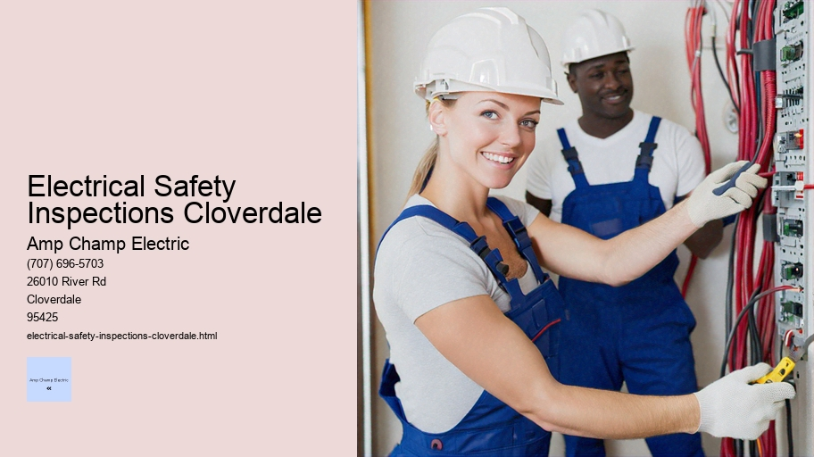

News
Electrical Installation Healdsburg
Electrical Installation Healdsburg
Electrical Installation Santa Rosa
Electrical Installation Cloverdale
Electrical Installation Geyserville
Electrical Installation Windsor
Maintenance and Repair Services Healdsburg
Maintenance and Repair Services Healdsburg
Maintenance and Repair Services Santa Rosa
Maintenance and Repair Services Cloverdale
Maintenance and Repair Services Geyserville
Maintenance and Repair Services Windsor
Electrical Safety Inspections Healdsburg
Electrical Safety Inspections Healdsburg
Electrical Safety Inspections Santa Rosa
Electrical Safety Inspections Cloverdale
Electrical Safety Inspections Geyserville
Electrical Safety Inspections Windsor
Energy Efficiency Upgrades Healdsburg
Energy Efficiency Upgrades Healdsburg
Energy Efficiency Upgrades Santa Rosa
Energy Efficiency Upgrades Cloverdale
Energy Efficiency Upgrades Geyserville
Energy Efficiency Upgrades Windsor
Specialty Electrical Services Healdsburg
Specialty Electrical Services Healdsburg
Specialty Electrical Services Santa Rosa
Specialty Electrical Services Cloverdale
Specialty Electrical Services Geyserville
Specialty Electrical Services Windsor
About Us
Contact Us

Electrical Safety Inspections Cloverdale
Lighting Design and Installation
Electrical Safety Inspections: Ensuring a Safe and Secure Home Environment
The very essence of our modern lives is intertwined with electrical systems. From the moment we flick on the lights in the morning to the last glance at our phones before sleep, electricity powers our day-to-day activities. However, this incredible force that brings so much convenience and comfort also carries potential hazards if not managed correctly. This is where electrical safety inspections become paramount – they are a critical element in ensuring our homes are safe from electrical dangers.
Electrical safety inspections involve a thorough examination of a property's electrical system, including wiring, systems, components, and appliances. The purpose of these evaluations is to ensure that everything meets legal safety standards and functions correctly without posing any risk to inhabitants or property. These inspections can uncover problems ranging from outdated wiring to overloaded circuits, grounding issues, faulty switches, and more.
Why Are Electrical Safety Inspections Important?
Firstly, they protect against fire hazards. Faulty or old wiring is one of the leading causes of house fires. During an inspection, electricians look for any signs of wear and tear that could lead to shorts or sparks capable of igniting flammable materials. By identifying these risks early on, it's possible to take corrective action before any harm occurs.
Secondly, they prevent electrocution injuries. Damaged wires or improperly grounded appliances can pose significant risks for shock or even fatal electrocution. Inspectors will check for ground fault circuit interrupters (GFCIs) in areas with moisture like bathrooms and kitchens since these devices help prevent shock by quickly cutting off power when necessary.
Additionally, with technology advancing rapidly and new electronic devices continually being introduced into homes, many older electrical systems aren't equipped to handle such loads. An inspector can assess whether your system needs an upgrade to accommodate modern appliances without risking overloads that could lead to outages or damage.
When Should You Have an Electrical Safety Inspection?
An electrical safety inspection should be done:
1. Before purchasing a home.
2. When a home is 25 years or older.
3. After major renovations.
4.
Lighting Design and Installation
If you notice anything unusual with your electrical system (e.g., frequent breaker trips).
What Does an Electrical Safety Inspection Entail?
During an inspection, certified electricians conduct several tests and visual examinations:
- Assessing the condition of outlets and switches.
- Checking the service panel for proper labels, clearances, and absence of corrosion.
- Ensuring all appropriate areas have GFCIs installed.
- Examining light fixtures for proper wattage usage.
- Evaluating outdoor electrical systems for weather-related damages.
- Looking at smoke detectors and carbon monoxide alarms placement and functionality.
After completing their evaluation, inspectors provide homeowners with detailed reports outlining any issues found along with recommendations for remedies—ranging from minor fixes like replacing outlets to more extensive rewiring projects when necessary.
Conclusion
In summing up the importance of regular electrical safety inspections cannot be overstated; they are instrumental in maintaining both personal safety as well as asset integrity within one’s home environment—acting almost like insurance against potential future calamities born from neglecting such critical reviews. It behooves every homeowner to consider scheduling periodic checks by qualified professionals who can assure peace of mind through their skilled assessment—their work stands as a bulwark safeguarding us against unseen dangers lurking behind walls powered by electricity's silent yet potent flow.
Let us remember that while electricity serves as a beacon driving progress forward into ever brighter tomorrows—a due diligence in its governance through prudent practices such as timely inspections ensures that its benefits are reaped devoid of detriment thus securing households across nations in serenity founded upon well-grounded assurances of protection against avoidable perils inherent within its use.
Electrical Safety Inspections Geyserville
Home Electrical Safety Assessments: A Critical Step Towards a Secure Living Environment
The comfort and convenience of modern living are largely powered by electricity. It lights our homes, cooks our meals, entertains us, and powers the myriad devices on which we have come to depend. However, the electrical systems that bring so much benefit can also pose significant risks if not properly installed, maintained, or used. Home electrical safety assessments emerge as a critical measure in mitigating these risks and ensuring that households are safe from electrical hazards.
A home electrical safety assessment is a thorough inspection of an entire residential electrical system. Conducted by professional electricians or certified inspectors, this evaluation serves to identify potential problems before they lead to accidents such as electric shocks or fires. Given the complexity of home wiring and the seriousness of what is at stake—human lives and valuable property—a systematic approach to safety assessments becomes indispensable.
Why Are Electrical Safety Assessments Important?
Statistics paint a grim picture: according to various fire departments' reports, electrical malfunctions remain one of the leading causes of home fires. These incidents often result from outdated wiring, overloaded circuits, faulty outlets, or improper use of extension cords. The tragedy lies in the fact that many such mishaps are preventable with regular inspections and maintenance.
An electrical safety assessment examines several key areas including but not limited to:
1. Wiring integrity
2. Outlet function and placement
3. Circuit breaker operation
4. Proper grounding systems
5. Smoke detector functionality
6. Surge protection adequacy
By scrutinizing these components among others, assessors can pinpoint issues ranging from minor inconveniences needing basic repairs to critical faults requiring immediate attention.
The Process of Conducting an Assessment
The process typically begins with visual inspections where readily accessible elements like switches and outlets are checked for proper operation and signs of wear or damage. The assessor will look for discolorations suggesting overheating or loose connections that could spell trouble.
Following this initial examination comes testing using specialized equipment designed to detect less obvious defects within the system—ground fault circuit interrupters (GFCIs) are tested for responsiveness; wiring insulation is examined for degradation; load tests may be performed on circuits to ensure they aren’t being overtaxed.
Professional assessors also review compliance with local building codes—a crucial step given how these regulations evolve alongside advancements in technology and understanding of best practices in electrical safety.
Electrical Safety Inspections Cloverdale - Journeyman Electrician
Electrical Service Upgrades
Electrical Supply Stores
Online Electrician Resources
Electrical Trade Schools
Recommendations for Upgrades or Repairs
At the end of an assessment, homeowners receive detailed findings along with recommendations for any necessary upgrades or repairs—an invaluable roadmap towards safeguarding their environment against potential disasters while possibly enhancing efficiency.
For instance, older properties might benefit significantly from replacing aluminum wiring with copper alternatives—the latter being less prone to expansion-contraction cycles that loosen connections over time leading to arcing and fires.
Furthermore, installing additional outlets can alleviate reliance on extension cords which when misused pose significant fire risks themselves; adding GFCIs in moisture-prone areas like bathrooms reduces chances of shock; whole-house surge protectors guard against voltage spikes capable of destroying electronics throughout your home in a flash literally!
Peace Of Mind Through Proactive Measures
Ultimately conducting regular home electrical safety assessments provides peace-of-mind knowing one’s living space adheres to high standards regarding electric system reliability minimizing risk exposure both physically financially due unexpected repair costs down line possibly insurance premium reductions acknowledging proactive measures taken towards hazard prevention!
In conclusion investing periodic evaluations stands out wise decision anyone who values security well-being those residing under their roof alongside longevity structures therein—it's simple yet powerful act stewardship echoing adage "better safe than sorry" perfect harmony contemporary life's dependence upon power electricity affords us all!
electrical-installation-healdsburg.html
electrical-installation-santa-rosa.html
electrical-installation-cloverdale.html
electrical-installation-geyserville.html
electrical-installation-windsor.html
maintenance-and-repair-services-healdsburg.html
maintenance-and-repair-services-santa-rosa.html
maintenance-and-repair-services-cloverdale.html
maintenance-and-repair-services-geyserville.html
maintenance-and-repair-services-windsor.html
electrical-safety-inspections-healdsburg.html
electrical-safety-inspections-santa-rosa.html
electrical-safety-inspections-cloverdale.html
electrical-safety-inspections-geyserville.html
electrical-safety-inspections-windsor.html
energy-efficiency-upgrades-healdsburg.html
energy-efficiency-upgrades-santa-rosa.html
energy-efficiency-upgrades-cloverdale.html
energy-efficiency-upgrades-geyserville.html
energy-efficiency-upgrades-windsor.html
specialty-electrical-services-healdsburg.html
specialty-electrical-services-santa-rosa.html
specialty-electrical-services-cloverdale.html
specialty-electrical-services-geyserville.html
specialty-electrical-services-windsor.html
privacy-policy.html
sitemap.html
sitemap.xml
about-us.html
feed.xml
Compliance checks with local codes and standards
Compliance Checks with Local Codes and Standards: A Critical Component for Safe and Sustainable Communities
The bedrock of modern civilization rests on the shoulders of well-established codes and standards. These are meticulously crafted guidelines that dictate how structures should be built, how businesses should operate, and how public services should be provided—all with the safety, health, and welfare of the community in mind.
Motion Sensors
Compliance checks with local codes and standards are not just bureaucratic red tape; they represent a critical process that ensures our living and working environments are safe, efficient, and sustainable.
When we talk about compliance checks with local codes and standards, we delve into a thorough examination of whether current practices align with established rules. This involves rigorous inspection routines carried out by trained professionals who assess buildings, systems, processes, and equipment to ascertain their adherence to legal requirements. The scope of these compliance checks can span from construction codes to fire safety regulations, environmental protection laws to health department guidelines.
One primary reason for strict adherence to these codes is public safety. For instance, building codes ensure that structures can withstand natural disasters like earthquakes or hurricanes without collapsing. Fire safety regulations prevent tragedies by mandating proper escape routes and fire suppression systems. Without such vigilant enforcement through compliance checks, communities would face significantly higher risks of accidents or disasters.
But it's not just about preventing catastrophe; it’s also about promoting quality of life. Environmental standards protect our air and water from pollution; health codes regulate food service establishments to prevent disease outbreaks; zoning laws maintain the character of neighborhoods while allowing for smart growth. Compliance checks ensure that these standards remain effective in safeguarding community well-being.
Moreover, non-compliance can have severe consequences—both legally and financially—for businesses and individuals alike. Fines for violations can run high, operations may be shut down temporarily or permanently for failure to comply with critical regulations; reputations can suffer irreparable damage when non-compliance comes to light.
However daunting this might sound for those subjected to scrutiny under these laws—the builders erecting new towers in an urban skyline or restaurant owners serving meals day in day out—the truth is that compliance benefits everyone involved in the long run. Ensuring alignment with local codes encourages innovation within industries as they strive to meet or exceed standard requirements using new technologies or methods.
Furthermore, regular updates to these standards reflect changing societal values—such as increased emphasis on sustainability—and keep them relevant over time. Therefore, staying compliant isn't merely about obeying existing rules but also about adapting responsibly as those rules evolve alongside us.
In this context then comes the role of education around what constitutes compliance—an aspect often overlooked but essential nonetheless for fostering a culture where following such protocols becomes second nature rather than an imposed burden.
In conclusion, compliance checks serve as a linchpin in maintaining the integrity of our communal spaces—it's through diligent application that we assure ourselves resilient infrastructures capable of supporting thriving societies now and into the future. They are not static hurdles but dynamic benchmarks guiding progress towards safer constructions while accommodating innovative designs—a balance crucially necessary if we aim at cultivating harmonious environments conducive both to individual aspirations and collective aspirations.
Testing of GFCI outlets and breakers
Testing Ground Fault Circuit Interrupter (GFCI) outlets and breakers is an essential safety practice that helps protect individuals from electrical shocks, particularly in areas where water and electricity are in close proximity. GFCIs are designed to quickly cut off the power if they detect a difference between the incoming and outgoing current, which can occur when electrical current is leaking through a person's body or an unintended path.
The Importance of Regular Testing
Regular testing ensures that these safety devices are functioning correctly. Over time, GFCIs can become worn or damaged, which may compromise their ability to protect you from shock. The U.S. National Electrical Code (NEC) suggests testing these devices monthly, but even more frequent testing might be prudent depending on their usage and environment.
How to Test GFCI Outlets
Testing a GFCI outlet is straightforward and doesn't require any special tools or expertise:
1. **Plug-In Test:**
- Start by plugging a small lamp or appliance into the GFCI outlet.
- Ensure that the device is turned on; the light should be illuminated if it’s a lamp.
2. **Test Button:**
- Locate the "TEST" button on the outlet – this should be clearly marked.
Uninterruptible Power Supply (UPS) Systems
- Press the "TEST" button on the outlet; you should hear a click sound as it trips.
3. **Response Check:**
- After pressing the test button, check if the light on your plugged-in device goes out.
- If it does not go out, then there may be something wrong with your GFCI outlet.
4. **Reset Function:**
- If everything works as expected so far, press the "RESET" button to restore power to the outlet.
5. **Final Verification:**
- Verify that your light or appliance turns back on once reset.
If at any point during these steps your GFI does not perform as described – for instance, if it fails to cut off power after pressing "TEST," or won’t restore power when you hit "RESET" – then it's time for further investigation by a qualified electrician who can assess whether replacement or repair is needed.
Testing GFCI Breakers
Similar principles apply when testing GFCI breakers:
1. **Locate Your Breaker Box:**
Find your electrical panel which houses circuit breakers including any GFCIs.
2. **Identify Your Test Subjects:**
Identify which breaker(s) have test buttons; these will typically be labeled “GFCI.”
3. **Performing The Test:**
- Ensure that some lights or appliances are active in circuits protected by your GFCI breaker for visual indication.
- Press the "TEST" button associated with each GFCI breaker.
4. **Observation Stage:**
If functioning properly, flipping this switch should immediately trip the breaker and turn off all devices powered by that circuit.
5. **Resetting Process:**
If tripped successfully, switch off completely before turning back to its original position—this effectively resets your breaker.
6** Final Check-Up:**
Power should now return—if not there could potentially be an issue requiring professional attention.
In both cases of outlets and breakers failing tests indicate potential malfunctioning of safety mechanisms within them—a serious concern considering purpose behind installing such protective measures first place! It's crucial we don't take lightly importance ensuring our homes' electrical systems remain safe regular maintenance checks like these simple yet effective tests!
Remember always prioritize safety—do not attempt repairs yourself unless fully confident knowledgeable about work doing; otherwise seek assistance certified professionals who guarantee job done right safely! Regular vigilance upkeep with regards our home’s electricity infrastructure goes long way toward preventing accidents preserving peace mind knowing loved ones protected hazards posed faulty wiring equipment!
Inspection of surge protectors and grounding
Title: The Importance of Regular Inspection of Surge Protectors and Grounding Systems
In a world increasingly reliant on electronic devices, the stability and security of electrical systems have become vital. Among these systems, surge protectors and grounding are critical components that ensure the safety and longevity of our electronics. It is essential to regularly inspect these elements to prevent potential hazards and maintain effective operation. This essay delves into why regular inspection is crucial for both surge protectors and grounding systems.
Surge protectors play a pivotal role in protecting our devices from voltage spikes that can occur due to lightning strikes, power outages, or other disturbances in the power grid. These protective devices act as gatekeepers, diverting excess energy away from sensitive electronics to prevent damage. However, like any other device, surge protectors can wear out over time. Each surge they absorb diminishes their capacity to handle future events. As such, without periodic inspections to assess their condition and effectiveness, we may inadvertently leave our devices exposed to the very risks we seek to avoid.
Regular inspections involve checking for visible signs of damage or wear, such as cracked casings or burnt components. Additionally, many modern surge protectors feature indicator lights that signal when protection is compromised – these too must be verified during an inspection. If defects are detected during these checks or if a protector has experienced a significant surge event, it should be replaced immediately.
Grounding systems serve another fundamental purpose in electrical safety; they provide a safe pathway for stray electricity to disperse into the earth rather than through flammable materials or human bodies. Properly functioning grounding minimizes the risk of electric shock and helps prevent electrical fires by redirecting unwanted current directly into the ground.
Inspecting grounding systems entails ensuring all connections are secure and free from corrosion which could impede their functionality. It also includes verifying that ground rods or other grounding electrodes are intact and properly installed according to national and local electrical codes. In buildings with more complex electrical systems, professional electricians may use specialized equipment like clamp meters to measure resistance levels in ground wires—ensuring they comply with safety standards.
Beyond visual checks and technical measurements lies another reason for regular inspection: compliance with regulations. Many industries are subject not only to internal quality assurance protocols but also external regulatory requirements regarding equipment maintenance including surge protection & grounding system integrity.
Moreover, insurance policies often stipulate regular maintenance of electrical systems as part of their terms—neglect here could result in denied claims should an incident arise related directly back to faulty electrics caused by poor maintenance practices.
The frequency at which inspections should take place varies depending on several factors including usage patterns environment (industrial settings might necessitate more frequent checks compared residential areas due higher exposure risks), type model protector/grounding system being used (some models recommend specific intervals), among others considerations unique each situation.
Ultimately regular inspection ensures continued reliability performance while mitigating potential dangers associated improper electrics - making it an indispensable practice within conscientious maintenance regime anyone concerned about safeguarding against unexpected disruptions damages stemming from volatile currents electricity’s unpredictable nature itself.
Evaluation of the overall condition of the electrical system
Title: Comprehensive Evaluation of an Electrical System's Integrity
In the intricate web of modern living, the electrical system stands as a silent yet potent force that powers our homes, industries, and cities. Given its crucial role in daily operations and safety concerns associated with electricity, regular evaluation of the overall condition of any electrical system is not just recommended; it's imperative. This essay delves into the importance, methodology, and outcomes of conducting a thorough assessment of an electrical system’s health.
**Importance of Electrical System Evaluation**
The significance of evaluating an electrical system lies in preventive maintenance. Like a well-oiled machine that runs smoothly, an electrical system free from defects ensures uninterrupted service while minimizing risks such as short circuits or fires. Moreover, compliance with regulations and standards set by local and international bodies necessitates periodic checks to ensure public safety and operational reliability.
**Methodology for Evaluating Electrical Systems**
Assessing an existing installation begins with visual inspections by qualified personnel who can identify obvious signs of wear and tear or degradation such as frayed wires, rust on panel boards, or overheated components. However, this is merely scratching the surface.
A more profound examination includes testing various characteristics like voltage levels, insulation resistance (using megohmmeters), continuity of protective conductors (earth), correct polarity, and functionality tests for residual-current devices (RCDs). Thermography can be employed to detect hotspots invisible to the naked eye before they evolve into hazards.
Another vital aspect is verifying adherence to design specifications regarding load capacities. Overloaded systems may work for a time but are accidents waiting to happen.
Electrical Safety Inspections Cloverdale - Journeyman Electrician
Uninterruptible Power Supply (UPS) Systems
Electrical Connectors and Fittings
Electrical Service Upgrades
Electrical Supply Stores
Online Electrician Resources
Electrical Trade Schools
Voltage Testing
Load analysis helps determine if the current setup can handle projected increases in demand without compromising safety or efficiency.
Furthermore, power quality analysis is essential for identifying issues like harmonics distortion or voltage fluctuations which could lead to inefficient operation or even damage sensitive equipment.
**Outcomes After Evaluation**
Post-evaluation actions depend on findings; often there are recommendations for repairs or upgrades. Immediate attention might be required if critical flaws are detected—such as outdated wiring unable to support modern appliances leading to potential overloads.
Upgrading measures might include replacing obsolete circuit breakers with arc-fault circuit interrupters (AFCIs) which provide enhanced protection against electric arcs—a common cause of electrical fires—in residential settings.
For commercial facilities where downtime translates directly into revenue loss, proactive replacement strategies based on predictive failure analyses might be advised.
Regular evaluations also help keep track of assets’ lifespan allowing budgeting for future replacements rather than facing unexpected costly emergency repairs after a breakdown occurs—an advantage from both financial planning and risk management perspectives.
Additionally, documented records from these assessments serve as evidence demonstrating due diligence towards maintaining safe operating conditions should any legal issues arise concerning the building's electrical integrity.
**Conclusion**
The evaluation process serves not only as a diagnostic tool but also guides strategic decisions about investments in infrastructure improvements. It aligns closely with sustainability goals through optimizing energy consumption by ensuring that all components function at peak efficiency. In essence, comprehensive evaluation transcends mere regulatory compliance—it embodies prudence in preserving assets while safeguarding human lives against potential dangers associated with electricity misuse or neglect.
About
Cloverdale
may refer to:
About Cloverdale
Check our other pages :
Specialty Electrical Services Healdsburg
Specialty Electrical Services Windsor
Electrical Installation Windsor
Electrical Safety Inspections Windsor
Frequently Asked Questions
What does an electrical safety inspection entail in Cloverdale?
An electrical safety inspection in Cloverdale involves a thorough examination of your home’s or businesss electrical system. This includes checking the integrity and compliance of wiring, outlets, switches, panels, grounding systems, surge protection, and the functionality of installed devices such as smoke detectors. The aim is to identify any potential hazards or areas not up to current electrical codes.
How often should I schedule an electrical safety inspection for my property?
It is generally recommended to have an electrical safety inspection every 3-5 years for residential properties and more frequently for commercial properties or if major renovations have taken place. Additionally, its wise to get an inspection if youre purchasing a new home or if your property is over 40 years old.
Who is qualified to perform an electrical safety inspection in Cloverdale?
A licensed electrician or a certified inspector with expertise in local regulations and codes should conduct the inspection. They will have the necessary skills and equipment to assess your system safely and thoroughly.
What are some signs that might indicate the need for an immediate electrical safety inspection?
Warning signs include frequent circuit breaker trips, shocks from appliances or outlets, flickering lights, burning smells from outlets or appliances, visibly frayed wires, or outdated panels. If you notice any of these issues, it’s time to call a professional electrician promptly.
Will I receive any documentation after my electrical safety inspection is complete?
Yes. After completing the inspection, the electrician should provide you with a detailed report outlining all findings – including potential hazards and recommendations for repairs or upgrades needed to ensure compliance with current safety standards. This document can be crucial for insurance purposes as well as future reference during maintenance or additional inspections.
Electrical Safety Inspections Cloverdale